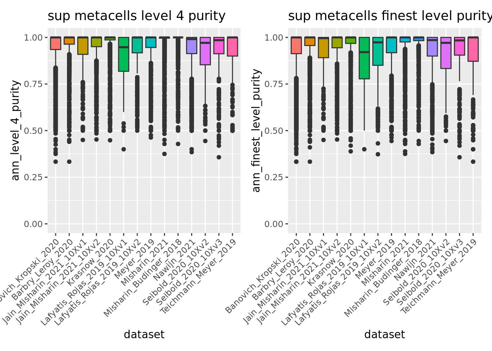

6.1 Unsupervised integration
In this section, we will work with the Human Cell Lung Atlas core HLCA gathering around 580,000 cells from 107 individuals distributed in 166 samples.
The aim of this tutorial is to show how you can use metacells to analyze a very large dataset using a reasonable amount of time and memory. For this we will use here SuperCell via the MCAT command line tool.
6.1.1 Data loading
Please follow the section 1.4 to retrieve the HLCA atlas, divide the atlas by dataset and save the splitted data in the following folder: “data/HLCA/”.
6.1.2 Setting up the environment
First we need to specify that we will work with the MetacellAnalysisToolkit conda environment (needed for anndata relying on reticulate and the MCAT tool). To build the conda environment please follow the instructions on our MetacellAnalysisToolkit github repository.
library(reticulate)
conda_env <- conda_list()[reticulate::conda_list()$name == "MetacellAnalysisToolkit","python"]
use_condaenv(conda_env)library(Seurat)
#> The legacy packages maptools, rgdal, and rgeos, underpinning this package
#> will retire shortly. Please refer to R-spatial evolution reports on
#> https://r-spatial.org/r/2023/05/15/evolution4.html for details.
#> This package is now running under evolution status 0
#> Attaching SeuratObject
library(anndata)
library(SuperCell)
library(ggplot2)
color.celltypes <- c('#E5D2DD', '#53A85F', '#F1BB72', '#F3B1A0', '#D6E7A3', '#57C3F3', '#476D87',
'#E95C59', '#E59CC4', '#AB3282', '#23452F', '#BD956A', '#8C549C', '#585658',
'#9FA3A8', '#E0D4CA', '#5F3D69', '#58A4C3', "#b20000",'#E4C755', '#F7F398',
'#AA9A59', '#E63863', '#E39A35', '#C1E6F3', '#6778AE', '#91D0BE', '#B53E2B',
'#712820', '#DCC1DD', '#CCE0F5', '#CCC9E6', '#625D9E', '#68A180', '#3A6963',
'#968175')6.1.3 Building metacell
We build metacells with the MCAT command line using SuperCell (-t SuperCell).
To facilitate downstream analysis of the donors we build metacells for each sample in each dataset (-a sample).
Here we will use 2000 highly variable genes (-f 2000) to compute the PCA from which we used 50 principal components (-m 50) to build a k = 30 (-k 30) nearest neighbor graph on which the metacells are identified using a graining level of 50 (-g 50).
We use an adata .h5ad output format (-s adata) as it is faster to write and lighter to store than a Seurat .rds object.
This step takes around 20 min with multiple cores (-l 6). Be aware that parallel processing requires more memory (32 GB of memory required for 6 cores).
If you are limited in memory you should still be able to process the samples by reducing the number of cores (e.g. -l 3) or
by sequentially processing the samples (just remove the -l) in a slightly longer time.
start=`date +%s`
for d in data/HLCA/datasets/*;
do /mnt/c/Aurelie/postdoc_UNIL/Metacell_review/MetacellAnalysisToolkit/cli/MCAT -t SuperCell -i $d/sc_adata.h5ad -o $d -a sample -l 3 -n 50 -f 2000 -k 30 -g 50 -s adata
done
echo "Duration: $((($(date +%s)-$start)/60)) minutes"6.1.4 Loading metacell objects
We load the .h5ad objects and directly convert them in Seurat objects to benefit from all the functions of this framework.
datasets <- list.dirs("data/HLCA/datasets/", full.names = F, recursive = F)
metacell.files <- sapply(datasets[1:5] , FUN = function(x){paste0("data/HLCA/datasets/",x,"/mc_adata.h5ad")})
metacell.objs <- lapply(X = metacell.files, function(X){
adata <- read_h5ad(X)
countMatrix <- Matrix::t(adata$X)
colnames(countMatrix) <- adata$obs_names
rownames(countMatrix) <- adata$var_names
sobj <- Seurat::CreateSeuratObject(counts = countMatrix,meta.data = adata$obs)
sobj <- RenameCells(sobj, add.cell.id = unique(sobj$sample)) # we give unique name to metacells
return(sobj)
})6.1.5 Merging objects and basic quality control
Given the single-cell metadata, the MCAT tool automatically assigns annotations to metacells and computes purities for all the categorical variables present in the metadata of the input single-cell object.
Thus, we can check the purity of our metacells at different levels of annotations, as well as their size (number of single cells they contain).
To do so we merge the object together and use the Seurat VlnPlot function.
unintegrated.mc <- merge(metacell.objs[[1]], metacell.objs[-1])
VlnPlot(unintegrated.mc, features = c("size", "ann_level_1_purity"), group.by = 'dataset', pt.size = 0.001, ncol = 2)
VlnPlot(unintegrated.mc, features = c("ann_level_2_purity", "ann_level_3_purity"), group.by = 'dataset', pt.size = 0.001, ncol = 2)
We can also use box plots.
ggplot(unintegrated.mc@meta.data,aes(x = dataset, y = ann_level_2_purity, fill = dataset)) + geom_boxplot() +
scale_x_discrete(guide = guide_axis(angle = 45))
ggplot(unintegrated.mc@meta.data,aes(x = dataset, y = ann_level_3_purity, fill = dataset)) + geom_boxplot() +
scale_x_discrete(guide = guide_axis(angle = 45))
ggplot(unintegrated.mc@meta.data,aes(x = dataset, y = ann_level_4_purity, fill = dataset)) + geom_boxplot() +
scale_x_discrete(guide = guide_axis(angle = 45))
ggplot(unintegrated.mc@meta.data,aes(x = dataset, y = ann_finest_level_purity, fill = dataset)) + geom_boxplot() +
scale_x_discrete(guide = guide_axis(angle = 45))
Overall metacells from the different datasets present a good purity until the third level of annotation.
6.1.6 Unintegrated analysis
Let’s first do a standard dimensionality reduction without batch correction.
DefaultAssay(unintegrated.mc) <- "RNA"
unintegrated.mc <- NormalizeData(unintegrated.mc)
unintegrated.mc <- FindVariableFeatures(unintegrated.mc)
unintegrated.mc <- ScaleData(unintegrated.mc)
unintegrated.mc <- RunPCA(unintegrated.mc)
unintegrated.mc <- RunUMAP(unintegrated.mc, dims = 1:30)
umap.unintegrated.datasets <- DimPlot(unintegrated.mc,reduction = "umap",group.by = "dataset") + NoLegend() + ggtitle("unintegrated datasets")
umap.unintegrated.types <- DimPlot(unintegrated.mc, reduction = "umap", group.by = "ann_level_2", label = T, repel = T, cols = color.celltypes)+ NoLegend() + ggtitle("unintegrated cell types")
umap.unintegrated.datasets + umap.unintegrated.types
remove(unintegrated.mc) # we won't use the unintegrated object anymore
gc()You can see on the plots that a batch effect is clearly present at the metacell level with metacells clustering by datasets inside the major cell types. Let’s correct it.
6.1.7 Seurat integration
Here we will use the standard Seurat_v4 batch correction workflow. As in the original study, we use the dataset rather than the donor as the batch parameter. See method section “Data integration benchmarking” of the original study for more details.
This should take less than 5 minutes.
# normalize each dataset
metacell.objs <- lapply(X = metacell.objs, FUN = function(x) {
DefaultAssay(x) <- "RNA";
x <- RenameCells(x, add.cell.id = unique(x$sample)) # we give unique name to metacells
x <- NormalizeData(x)
x <- FindVariableFeatures(x, selection.method = "vst", nfeatures = 2000)
return(x)})
features <- SelectIntegrationFeatures(object.list = metacell.objs)
metacell.objs <- lapply(X = metacell.objs, FUN = function(x) {
x <- ScaleData(x, features = features, verbose = FALSE)
x <- RunPCA(x, features = features, verbose = FALSE)
})
anchors <- FindIntegrationAnchors(object.list = metacell.objs,
anchor.features = features,
reduction = "rpca",
reference = c(1,2,5), #,9,11 the 5 biggest datasets (in term of metacell number) are used as reference
dims = 1:30)
remove(metacell.objs) # We don't need the object list anymore
gc()
combined.mc <- IntegrateData(anchorset = anchors,k.weight = 50) # we have to update the k.weight parameters because the smallest dataset contain less than 100 metacellsCheck the obtained object.
combined.mc
#> An object of class Seurat
#> 30024 features across 6061 samples within 2 assays
#> Active assay: integrated (2000 features, 2000 variable features)
#> 1 other assay present: RNAWe can verify that the sum of metacell sizes corresponds to the original number of single-cells
sum(combined.mc$size)
#> [1] 302920Seurat returns the slot "integrated" that we can use for the downstream analysis.
DefaultAssay(combined.mc) = "integrated"
combined.mc <- ScaleData(combined.mc, verbose = FALSE)
combined.mc <- RunPCA(combined.mc, npcs = 30, verbose = FALSE)
combined.mc <- RunUMAP(combined.mc, reduction = "pca", dims = 1:30, verbose = FALSE)
combined.mc <- RunUMAP(combined.mc, dims = 1:30,reduction = "pca",reduction.name = "umap", verbose = FALSE)Now we can make the plots and visually compare the results with the unintegrated analysis.
umap.integrated.datasets <- DimPlot(combined.mc,reduction = "umap",group.by = "dataset") + NoLegend() + ggtitle("integrated datasets")
umap.integrated.celltypes <- DimPlot(combined.mc,reduction = "umap",group.by = "ann_level_2",label = T,repel = T,cols = color.celltypes) + NoLegend() + ggtitle("integrated cell types")
umap.integrated.datasets + umap.integrated.celltypes + umap.unintegrated.datasets + umap.unintegrated.types
Seurat efficiently corrected the batch effect in the data while keeping the cell type separated, but other batch correction methods such as harmony would have also done the job.
Note that In the original study, datasets were integrated using SCANVI semi-supervised integration using partial annotation obtained for each dataset prior integration. If you are interested in such supervised approach at the metacell level in R you can have a look to our second example in section @ref(integration_supervised) using the STACAS package.
We can navigate in the different annotation levels.
library(ggplot2)
DimPlot(combined.mc,group.by = "ann_level_1",reduction = "umap",label = T,repel = T,cols= color.celltypes) + NoLegend()
DimPlot(combined.mc,group.by = "ann_level_2",reduction = "umap",label = T,repel = T,cols= color.celltypes) + NoLegend()
DimPlot(combined.mc,group.by = "ann_level_3",reduction = "umap",label = T, repel = T,cols= color.celltypes) + NoLegend()
6.1.8 Downstream analysis
6.1.8.1 Clustering
We cluster the metacells based on the corrected PCA space by Seurat.
DefaultAssay(combined.mc) <- "integrated"
combined.mc <- FindNeighbors(combined.mc, reduction = "pca", dims = 1:30)
combined.mc <- FindClusters(combined.mc, resolution = 0.5)
UMAPPlot(combined.mc, label = T) + NoLegend()
6.1.8.2 Deferentially expressed gene (DEG) analysis.
Now let’s found the markers of the cluster 19 we’ve just identified.
DefaultAssay(combined.mc) <- "RNA"
markers18 <- FindMarkers(combined.mc, ident.1 = 18, only.pos = T)
#> For a more efficient implementation of the Wilcoxon Rank Sum Test,
#> (default method for FindMarkers) please install the limma package
#> --------------------------------------------
#> install.packages('BiocManager')
#> BiocManager::install('limma')
#> --------------------------------------------
#> After installation of limma, Seurat will automatically use the more
#> efficient implementation (no further action necessary).
#> This message will be shown once per session
head(markers18)
#> p_val avg_log2FC pct.1 pct.2 p_val_adj
#> HOXD9 0 0.8120847 0.968 0.020 0
#> DTX1 0 0.3972931 0.871 0.021 0
#> STAB2 0 0.4492518 0.758 0.006 0
#> SCN3A 0 0.3283766 0.806 0.012 0
#> GPR182 0 0.6745167 0.952 0.013 0
#> HOXD8 0 1.1639281 1.000 0.025 0This cluster clearly presents a B cell signature with marker genes such as CD19 and PAX5
genes <-c("CD19","PAX5") # knwon mast cells markers
markers18[genes,]
#> p_val avg_log2FC pct.1 pct.2 p_val_adj
#> NA NA NA NA NA NA
#> NA.1 NA NA NA NA NA
VlnPlot(combined.mc, genes, ncol = 1)
By looking at the metacell annotation (assigned from the original single-cell metadata by MCAT), we can verify that we correctly retrieved the B cell lineage cluster.
DimPlot(combined.mc[, combined.mc$integrated_snn_res.0.5 == 18],
group.by = c("ann_level_3", "integrated_snn_res.0.5"),
ncol = 2)
6.1.8.3 Cell type abundances analyses.
We can easily make analysis of cell type abundances for different clinical variables as we construct metacell by sample. We have to take metacell size into account for these analyses. For instance we can analyse the proportion of different epithelial cell types depending on the smoking status.
library(reshape2)
combined.mc.epith <- combined.mc[,combined.mc$ann_level_1 == "Epithelial"]
#combined.metacells$major_type <- droplevels(combined.metacells$major_type)
smpCounts <- aggregate(combined.mc.epith$size, by=list(sample = combined.mc.epith$sample,
major_type = combined.mc.epith$ann_level_3,
smoking_status = combined.mc.epith$smoking_status),
FUN=sum)
remove(combined.mc.epith)
gc()
ggplot(smpCounts,aes(x = smoking_status,fill=major_type)) + geom_bar(position = "fill") + scale_fill_manual(values = color.celltypes) + xlab("% epithelial cells")
Samples from smokers seem to present more AT2 cells but this quick analysis is for illustrative purposes only. In practice it’s far more complex to draw conclusion as we should have considered the variations between samples/donors as well as many other technical (tissue dissociation protocol, tissue sampling method, single-cell platform, … ) and biological (BMI, sex, Age, …) variables.
6.1.9 Conclusion
Overall we made a precise simplification of the original atlas using metacells built from each sample separately. By reducing the size of the original atlas by a factor of 50 we could load the data, make an integration to correct batch effect and recapitulate the main different cell types using a reasonable amount of time and memory. In contrast, simply loading the original single-cell data in R using Seurat is extremely time-consuming and challenging even for the most powerful computers.
In this first example we used a fully unsupervised workflow and did not use any prior biological knowledge. Authors of the original study made a remarkable work annotating the hundreds of thousands cells of the atlas. In the second example in section @ref(integration_supervised) we propose a supervised workflow using this annotation to guide both the metacell identification and the batch correction.
We can save the results for comparison with the second example.
saveRDS(combined.mc,"data/HLCA/combined.mc.unsup.rds")